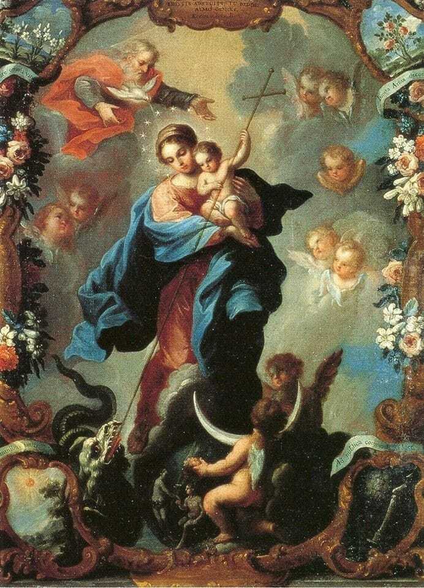

Seja bem-vindo(a) à exposição das aparições marianas!
O objetivo principal deste site é expor e fazer conhecidas todas as aparições marianas registradas até hoje! Além disso, principalmente nos tempos que vivemos, torna-se necessário a divulgação da devoção à Virgem Maria, mãe de Deus, para recrutarmos novos soldados para o exército de Maria!
Dessa maneira, podemos contribuir ativamente para o cumprimento da profecia feita no livro do Gênesis 3,15: "Porei ódio entre ti e a mulher, entre a tua descendência e a dela. Esta te ferirá a cabeça, e tu ferirás o calcanhar"
Lembremos também, da profecia revelada por Nossa Senhora em Fátima no ano de 1917: "Por fim, meu imaculado coração triunfará."
*Obs: página inspirada no site sobre os Milagres Eucarísticos criado pelo Beato Carlo Acutis: link para o site*